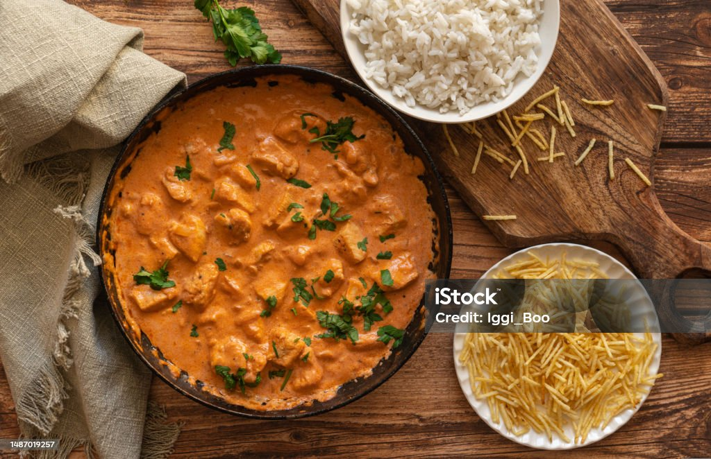

Pagina inicial
Strogonoff de frango

Descrição
Strogonoff de Frango é uma receita típica da culinária Brasileira, um prato que é muito fácil de preparar e ao mesmo tempo é bem sofisticado. Em suas variadas formas de ser preparado, alguns optam por carne mas nessa receita usaremos frango, prepare os ingredientes e vamos por mãos a massa!
ingredientes
- 1 peito de frango sem pele e sem osso (cerca de 700 gramas)
- 200 gramas de cogumelos paris fatiados
- 1 Cebola cortada em cubinhos
- 2 Dentes de alho picados
- 1 e 1/2 colher de sopa de extrato de tomate
- 1 e 1/2 colher de sopa de Ketchup
- 1 e 1/2 colher de sopa de molho inglê
- 1 e 1/2 colher de sopa de conhaque
- 1 e 1/2 xicará de chá de creme de leite fresco
- Azeite a gosto
- Sal e pimenta-do-reino moida a gosto
Passos
- Reúna os ingredientes do strogonoff de frango;
- Corte o frango em pedaços de cerca de 2 centímetros;
- Em uma panela já quente, no fogo médio, coloque o azeite e uma parte dos cubos de frango. Tempere com sal;
- Doure os dois lados, tempere o outro lado com sal e reserve em um prato. Repita esse processo, fritando porções do frango aos poucos para que ele não cozinhe no próprio vapor e fique ressecado. Se necessário, coloque mais azeite entre as etapas;
- Retire todo o frango douradinho em um prato;
- Na mesma panela, coloque azeite, cebola, tempere com sal e misture;
- Assim que a cebola estiver dourada, coloque o alho e misture;
- Adicione o ketchup, o extrato de tomate e mexa;
- Junte o frango e o líquido que se formou. Misture até ficar tudo homogêneo;
- Afaste o frango e deixe o meio da panela vazio. Coloque o conhaque no centro e o molho inglês nas laterais por cima do frango;
- Após o álcool evaporar, misture tudo;
- Junte os cogumelos fatiados, coloque um pouco de sal e pimenta-do-reino por cima dos cogumelos. Misture;
- Coloque o creme de leite fresco e misture bem até engrossar. Se necessário ajuste o sal e pimenta-do-reino;
- Agora é só servir. Bom apetite!
Fonte: Receitaria